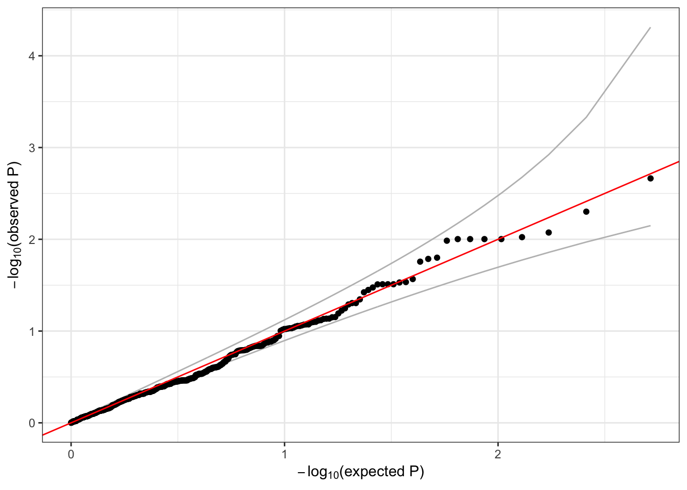

6 Association tests with related subjects
These exercises introduce relatedness to association testing with mixed models.
6.1 Null model
The first step in an association test is to fit the null model. In addition to the AnnotatedDataFrame with phenotypes we used previously, we will need the principal components and kinship. We will use the first five PCs to adjust for ancestry.
# sample annotation
sampfile <- "data/sample_phenotype_annotation.RData"
annot <- TopmedPipeline::getobj(sampfile)
library(Biobase)
head(pData(annot))## sample.id subject.id Population Population.Description sex
## 1 HG00096 HG00096 GBR British in England and Scotland M
## 2 HG00097 HG00097 GBR British in England and Scotland F
## 3 HG00099 HG00099 GBR British in England and Scotland F
## 4 HG00100 HG00100 GBR British in England and Scotland F
## 5 HG00101 HG00101 GBR British in England and Scotland M
## 6 HG00102 HG00102 GBR British in England and Scotland F
## status age height study
## 1 0 47 165.300 study_1
## 2 1 47 144.780 study_3
## 3 0 40 185.500 study_2
## 4 1 45 150.622 study_3
## 5 0 40 177.800 study_3
## 6 0 49 169.100 study_1# load the PCs
pcfile <- "data/pcs.RData"
pcs <- TopmedPipeline::getobj(pcfile)
pcs <- pcs[,c("sample.id", "PC1", "PC2", "PC3", "PC4", "PC5")]
head(pcs)## sample.id PC1 PC2 PC3 PC4 PC5
## 1 HG00096 -0.02098435 -0.03716014 -0.007539234 -0.004984352 -0.03920777
## 2 HG00097 -0.01929295 -0.03289496 -0.009176117 -0.005328914 -0.03297778
## 3 HG00099 -0.02042444 -0.03371227 -0.010983795 -0.004856350 -0.03208595
## 4 HG00100 -0.01970348 -0.03978044 -0.013302258 -0.004340841 -0.04208343
## 5 HG00101 -0.01959563 -0.03431033 -0.008571074 -0.002220712 -0.03260015
## 6 HG00102 -0.02041573 -0.03941142 -0.010696762 0.001506639 -0.02913023# add PCs to the sample annotation
dat <- left_join(pData(annot), pcs, by="sample.id")
pData(annot) <- dat
save(annot, file="sample_phenotype_pcs.RData")We create a kinship matrix from the output of pcrelate. We multiply the kinship values by 2 to get values equivalent to a GRM. This matrix is represented in R as a symmetric matrix object from the Matrix package.
kinfile <- "data/pcrelate_kinship.RData"
pcrel <- TopmedPipeline::getobj(kinfile)
kinship <- pcrelateToMatrix(pcrel, scaleKin=2, verbose=FALSE)
dim(kinship)## [1] 100 100kinship[1:5,1:5]## 5 x 5 Matrix of class "dsyMatrix"
## HG00110 HG00116 HG00120 HG00128 HG00136
## HG00110 1.062086715 0.02049398 -0.006412347 0.010199379 -0.026171731
## HG00116 0.020493975 0.92914833 0.176596566 0.012580254 -0.020707995
## HG00120 -0.006412347 0.17659657 0.969533982 -0.007387808 -0.056610406
## HG00128 0.010199379 0.01258025 -0.007387808 0.935900451 0.003227475
## HG00136 -0.026171731 -0.02070799 -0.056610406 0.003227475 1.011102071We fit the null model, adding the PCs to the list of covariates, and specifying the kinship as the covariance matrix with the cov.mat argument. As before, we use study as a grouping variable.
library(GENESIS)
nullmod <- fitNullModel(annot, outcome="height",
covars=c("sex", "age", "study", paste0("PC", 1:5)),
cov.mat=kinship, group.var="study", verbose=FALSE)
save(nullmod, file="null_mixed_model.RData")6.2 Single-variant tests
Now we can run a single-variant test, accounting for relatedness between the subjects.
library(SeqVarTools)
gdsfile <- "data/1KG_phase3_subset_chr1.gds"
gds <- seqOpen(gdsfile)
seqData <- SeqVarData(gds, sampleData=annot)
iterator <- SeqVarBlockIterator(seqData, verbose=FALSE)
assoc <- assocTestSingle(iterator, nullmod)## # of selected samples: 100head(assoc)## variant.id chr pos allele.index n.obs freq Score Score.SE
## 1 1 1 970546 1 100 0.015 -0.08720781 0.1419917
## 2 2 1 985900 1 100 0.045 -0.22392313 0.2316274
## 3 3 1 1025045 1 100 0.000 NA NA
## 4 4 1 1265550 1 100 0.000 NA NA
## 5 5 1 1472676 1 100 0.005 -0.08044594 0.0867442
## 6 6 1 1735725 1 100 0.000 NA NA
## Score.Stat Score.pval
## 1 -0.6141754 0.5390994
## 2 -0.9667385 0.3336748
## 3 NA NA
## 4 NA NA
## 5 -0.9273927 0.3537227
## 6 NA NAqqPlot(assoc$Score.pval)
6.3 Exercise
Run a sliding window test using the mixed model and make a QQ plot.
seqResetFilter(seqData, verbose=FALSE)
iterator <- SeqVarWindowIterator(seqData, windowSize=5000, windowShift=2000, verbose=FALSE)
assoc <- assocTestAggregate(iterator, nullmod, test="Burden", AF.max=0.1, weight.beta=c(1,1))## # of selected samples: 100head(assoc$results)## chr start end n.site n.alt n.sample.alt Score Score.SE
## 1 1 966001 971000 1 3 3 -0.08720781 0.1419917
## 2 1 982001 987000 1 9 9 -0.22392313 0.2316274
## 3 1 1022001 1027000 0 0 0 NA NA
## 4 1 1262001 1267000 0 0 0 NA NA
## 5 1 1468001 1473000 1 1 1 -0.08044594 0.0867442
## 6 1 1732001 1737000 0 0 0 NA NA
## Score.Stat Score.pval
## 1 -0.6141754 0.5390994
## 2 -0.9667385 0.3336748
## 3 NA NA
## 4 NA NA
## 5 -0.9273927 0.3537227
## 6 NA NAhead(assoc$variantInfo)## [[1]]
## variant.id chr pos allele.index n.obs freq weight
## 1 1 1 970546 1 100 0.015 1
##
## [[2]]
## variant.id chr pos allele.index n.obs freq weight
## 1 2 1 985900 1 100 0.045 1
##
## [[3]]
## [1] variant.id chr pos allele.index n.obs
## [6] freq weight
## <0 rows> (or 0-length row.names)
##
## [[4]]
## [1] variant.id chr pos allele.index n.obs
## [6] freq weight
## <0 rows> (or 0-length row.names)
##
## [[5]]
## variant.id chr pos allele.index n.obs freq weight
## 1 5 1 1472676 1 100 0.005 1
##
## [[6]]
## [1] variant.id chr pos allele.index n.obs
## [6] freq weight
## <0 rows> (or 0-length row.names)seqClose(gds)